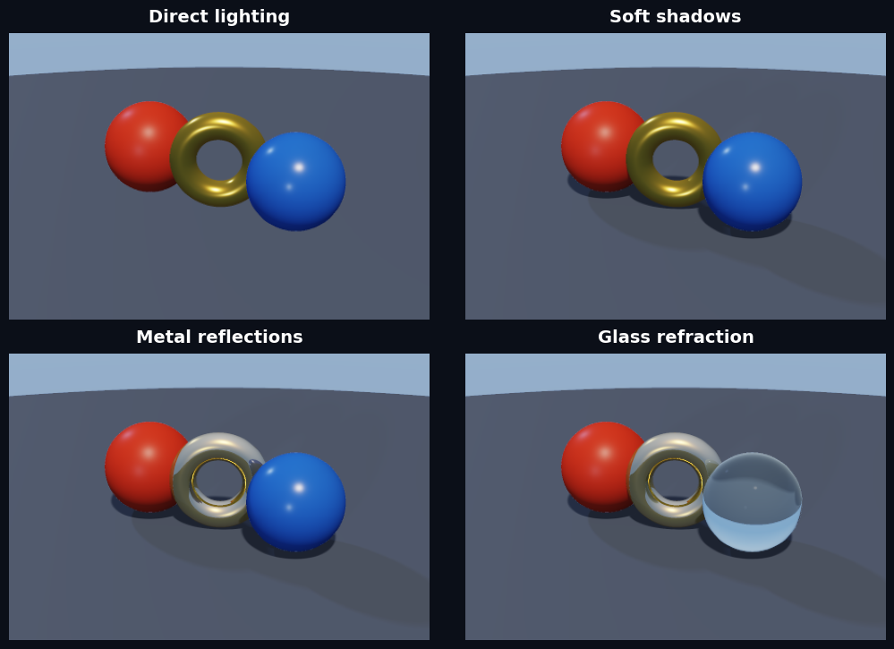
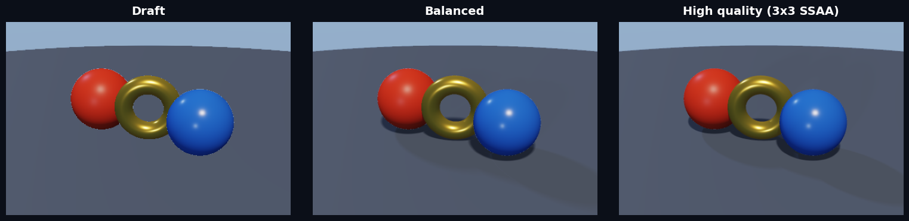

Forward Renderer
cadjoint’s image renderer is designed for predictable forward rendering. It uses early-exit sphere tracing, screen-space silhouette reconstruction, finite-difference normals, Cook–Torrance GGX materials, soft shadows, and optional reflection and refraction rays.
Geometry and constraints remain JAX-native and differentiable. Rendered pixels are intentionally not an inverse-rendering or optimization API — the gradients this project cares about run through meshing and simulation, not through visibility.
Scene and quality settings
Use Scene for camera, lights, and environment data and RenderSettings for the performance/fidelity trade-off:
from dataclasses import replace
from cadjoint.render import Camera, RenderSettings, Scene, render_scene
from cadjoint.sdf.primitives import Sphere
scene = Scene(
Sphere(1.0),
camera=Camera(position=(0, 1.5, 5), target=(0, 0, 0)),
)
preview = render_scene(scene, RenderSettings.draft((240, 320)))
final = render_scene(scene, RenderSettings.high_quality((480, 640)))
# Presets are immutable; override only what a scene needs.
mirror = replace(RenderSettings.balanced(), reflect_steps=64)render_scene returns a (H, W, 3) float array. The low-level raymarch(sdf, ...) function remains available for compact notebook calls, and render_raymarched(...) wraps it to display on a matplotlib axis.
Each primary trace retains its closest approach to the scene. Rays that narrowly miss a surface receive screen-space coverage across RenderSettings.silhouette_smoothing pixels, which removes hard hit/miss outlines without restoring differentiable visibility or fixed-step tracing. Set the value to 0 when exact binary coverage is required.
Rendering modes
All panels below are produced by the forward renderer. Soft shadows stop as soon as they find an occluder, and reflection and refraction rays are enabled only when requested.

Quality presets
| Preset | Trace steps | Hit ε | Shadow steps | SSAA | Default resolution |
|---|---|---|---|---|---|
draft |
72 | 1.5e-3 | 0 | 1×1 | 200 × 200 |
balanced |
96 | 1e-3 | 32 | 2×2 | 200 × 200 |
high_quality |
160 | 5e-4 | 64 | 3×3 | 400 × 400 |
draft is direct lighting with no secondary visibility; balanced adds soft shadows and reconstructed silhouettes; high_quality tightens surface precision and doubles the shadow budget. Reflection and refraction are off in all three and must be asked for explicitly.

The presets are starting points rather than hidden modes. Every field is public, validated, and can be changed with dataclasses.replace.
Materials
Attach a Material to any primitive. It is queried per hit point during rendering, and Union blends materials smoothly across a blended boundary.
from cadjoint.render import Material
from cadjoint.sdf.primitives import Sphere
sphere = Sphere(
radius=1.0,
material=Material(
color=[0.22, 0.50, 0.95],
roughness=0.35,
metallic=0.0,
opacity=1.0,
ior=1.0,
),
)Transparency and refraction
Set opacity < 1 for transparency. With refract_steps=0 (the default) the surface simply fades toward the background. With refract_steps > 0 the renderer performs two-bounce Snell’s-law refraction: the primary ray bends into the material, an interior march finds the back face using −sdf as the distance field, and the ray bends back into air to continue through the rest of the scene. Schlick-Fresnel adds the edge highlight that brightens the rim of a glass sphere at grazing angles.
import jax.numpy as jnp
from cadjoint.render import Material, raymarch
from cadjoint.sdf.boolean import Union
from cadjoint.sdf.primitives import Sphere
from cadjoint.sdf.transforms import Translate
glass = Sphere(radius=1.0, material=Material(
color=[0.92, 0.97, 1.0], roughness=0.05, opacity=0.04, ior=1.5))
red_ball = Translate(
Sphere(radius=0.65, material=Material(color=[0.93, 0.26, 0.22])),
offset=jnp.array([-1.1, 0.5, -3.0]),
)
image = raymarch(
Union((glass, red_ball), smoothness=0.0),
camera_pos=jnp.array([0.0, 0.5, 5.5]),
resolution=(400, 400),
background_color=jnp.array([0.07, 0.09, 0.16]),
refract_steps=48,
max_steps=80,
aa_samples=2,
)| Material | ior |
|---|---|
| air / disabled | 1.0 |
| water | 1.33 |
| glass | 1.5 |
| diamond | 2.42 |
Shader compilation
The same scene compiles to a standalone shader function. JAX traces distance and material evaluation, lowers both to StableHLO, and cadjoint emits the shader source from there — so the browser renders the identical field the Python renderer does.
from cadjoint.backends import compile_scene_to_wgsl, compile_sdf_to_wgsl
from cadjoint.sdf.primitives import Sphere
wgsl = compile_sdf_to_wgsl(Sphere(radius=1.0)) # just `fn sdf`
scene_wgsl = compile_scene_to_wgsl(Sphere(radius=1.0)) # + materialscompile_scene_to_wgsl emits sdf, material_base (RGB + roughness), and material_optics (metallic + opacity + IOR + reflectivity) from one scene snapshot, ready to embed in a WebGPU renderer. This is exactly what the playground does on every run.
How big the shader gets
A shader is one straight-line function per entry point, so its size is decided by how much of the tree the trace unrolls. Two things keep that in check. A node evaluated more than once — a pattern’s child, a subtree two booleans share — is lowered as its own StableHLO function, and the emitter turns each of those into one WGSL function called once per instance; a bearing housing with four polar patterns is 1.45 MB of WGSL rather than 2.42 MB. What is not shared is the vertex loop of a sketch profile: WGSL has no type wider than a mat4, so a profile’s vertices stay individual vec2s and its contribution grows with the vertex count. (Everything else traces the profile as one (N, 2) array; see the meshing notes.)
Design parameters are inlined as float literals by default, so editing one rewrites the whole module and the browser recompiles it. uniforms=True returns a ShaderProgram instead: the same source for every parameter value, plus a vec4-per-parameter uniform layout to write the values into.
from cadjoint.geometry import Scalar
sphere = Sphere(radius=Scalar(1.0, free=True, name="radius"))
program = compile_scene_to_wgsl(sphere, uniforms=True)
program.wgsl # identical across every value edit
program.parameters[0].name # 'radius' — the name extract_parameters uses
program.buffer() # float32 array to upload at @group(3) @binding(0)Further reading
- Rendering notebook — composition, quality presets, and hot reload
- The playground — the interactive WebGPU viewport, its progressive path tracer, and its views of the field itself (signed slice, gradient magnitude, iso-offset, normals, depth)
- WebGPU SDF path tracing — design and deliberate boundaries of the browser path tracer